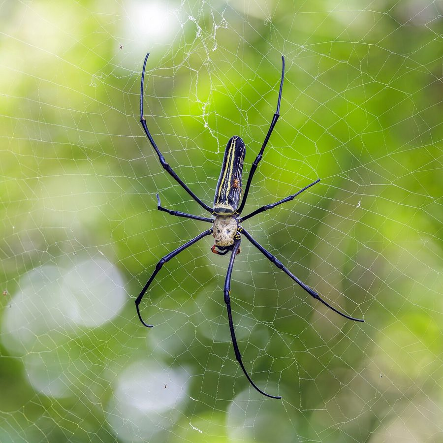

सोन मकड़ीGiant Wood Spider
Nephila pilipes · Araneidae · SPD-0002

- Scientific name
- Nephila pilipes (Fabricius, 1793)
- Family
- Araneidae
- Hindi
- सोन मकड़ी / रेशमी मकड़ी / बड़ी जाल मकड़ी
- Status here
- native
- IUCN
- not evaluated
When to look कब देखें
Season not recorded.
सोन मकड़ी / Giant Wood Spider
Nephila pilipes (Fabricius, 1793) — Araneidae
सोन मकड़ी — "सुनहरे रेशम की मकड़ी" — दक्षिण एशिया की सबसे बड़ी ओर्ब-बुनकर मकड़ी है। मादा के पैरों का फैलाव 15-20 से.मी. तक होता है। इसका जाला एक मीटर व्यास से बड़ा हो सकता है, और सबसे खास: जाले के रेशम का रंग सुनहरा-पीला होता है — धूप में चमकता है। पूर्वी UP के बाग-बगीचों और जंगल के किनारों पर सितम्बर-नवम्बर में यह बड़ी मकड़ी आसानी से दिखती है। यह जहरीली नहीं है — पर इंसान से बड़ी दिखती है, इसीलिए डर पैदा करती है।
Quick Identification त्वरित पहचान
| Feature | Description |
|---|---|
| Female size | Leg span 15–20 cm; body 3–5 cm — one of Asia's largest spiders |
| Male size | Tiny — 0.5–1 cm body; leg span 2–3 cm — lives at periphery of female's web |
| Web | Large (up to 1.5 m), orb web; silk noticeably yellow-golden in direct sunlight |
| Abdomen | Yellow-and-black or silver with yellow spots |
| Legs | Long, feathery tufts at joints (tibial brushes) — distinctive |
| Habitat clue | Large web spanning between trees/shrubs at 1–3 m height |
Field tip: The golden glint of the web in morning sun is visible from 5–10 metres. The massive female (immobile at web centre) can be confused with a small bird at first glance. Males are tiny and may be missed — look for 3–5 tiny males sitting at web margins.
Morphology आकारिकी
| Measurement | Range |
|---|---|
| Body length (female) | 30–50 mm |
| Body length (male) | 5–10 mm |
| Leg span (female) | 150–200 mm |
| Leg span (male) | 20–30 mm |
Female: One of Asia's largest orb-weaving spiders. Cephalothorax (fused head-thorax) pale green-grey; abdomen large, ovoid, with a striking pattern — pale grey to silver with yellow/orange spots, or strongly yellow-and-black patterned. Eight eyes in two rows. Eight long legs with distinctive feathery tufts (scopulae) at tarsal joints. Chelicerae (fang-bearing mouthparts) strong enough to bite if severely provoked.
Male: Strikingly smaller than female — a phenomenon called extreme sexual size dimorphism. Males 5–15× smaller by body weight. Males often found living at the periphery of the female's web, waiting for mating opportunities.
Web: Orb web 0.5–1.5 m across, built between trees or shrubs. The frame threads (radii and spiral) are made of different types of silk. The capture spiral is made of viscid (sticky) silk; the structural threads are dry. The golden colour of the silk is structural — it reflects specific wavelengths. Spiders regularly renew the central portion but keep the outer frame for months.
Kleptoparasites: Several small spider species (Argyrodes, others) live uninvited in Nephila webs, stealing trapped insects — a phenomenon called kleptoparasitism.
सुनहरा जाल: रेशम का रंग सुनहरा-पीला इसलिए है — यह रंग मधुमक्खियों (INS-0007) को आकर्षित करता है, जो UV रंग देखती हैं। सुनहरे रंग का रेशम UV के साथ फूलों जैसा दिखता है — शिकार खुद जाल में आ जाता है।
Ecological Role पारिस्थितिक भूमिका
Aerial insect trap: The large web catches flying insects up to the size of a small dragonfly or large butterfly. Prey includes: moths, beetles, flying ants, dragonflies, small bees, and wasps. The spider immobilises prey with venom injection and wraps it in silk for later consumption.
Golden silk hypothesis: The yellow silk colour may serve as an attractant for pollinating insects — bees and other flower-visiting insects may be attracted to the yellow/UV signal of the web, mistaking it for flowers. This gives Nephila webs a unique "lure" function beyond simple passive trapping.
Kleptoparasite host: The giant web of Nephila acts as a habitat for numerous kleptoparasitic spiders (Argyrodes), mites, and insects that exploit the web structure and stolen prey scraps. A single large Nephila web may harbour 10–15 kleptoparasite individuals.
Prey for birds: Despite the impressive size, Nephila spiders are preyed upon by: large birds (especially Black Kite BRD-0011, which snatches them from webs), lizards, and large wasps (spider wasps, Pompilidae). The spider is a significant food source for insectivorous birds.
Bioindicator: Giant orb-weavers require intact woodland-edge habitats with stable tree canopies for web attachment. Their presence indicates a relatively undisturbed woodland structure.
जाल का रंग एक जाल है: सुनहरा जाल सिर्फ मज़बूत नहीं — यह मधुमक्खियों को धोखा देता है। पीला और UV रंग मिलकर फूलों जैसा संकेत बनाते हैं। मकड़ी ने विकास से एक "फूलों की नकल" बनाई है।
Life Cycle / Phenology जीवन चक्र
| Month | Event |
|---|---|
| Apr–Jun | Spiderlings hatch from overwintered egg sac; disperse by ballooning (silk threads in air) |
| Jun–Aug | Growth through 7–9 moults (instars); juveniles build small webs |
| Aug–Nov | Adults — large females at web centres; males seek mates |
| Sep–Nov | Mating; female may eat male after mating (sexual cannibalism) |
| Oct–Dec | Egg sac deposited in sheltered location; wrapped in thick golden silk |
| Dec–Mar | Eggs overwinter; parents die in cold |
Sexual cannibalism: After mating, the female sometimes eats the male — particularly if hungry. Males have adapted "evasion" behaviours — mating when the female is feeding (distracted), and sometimes self-amputating a palp to reduce mass and escape faster.
Ballooning: Newly hatched spiderlings spin silk threads and rise on air currents — a passive dispersal mechanism that can carry them several kilometres. This is called "ballooning" or "kiting."
खाने वाली माँ: संभोग के बाद मादा कभी-कभी नर को खा जाती है। नर ने इसका जवाब ढूंढ लिया है — मादा के खाने के समय सम्भोग करता है (जब वह विचलित हो) और फिर जल्दी भागता है।
Agricultural / Human Relevance कृषि एवं मानव उपयोग
Spider silk strength: Nephila silk is the strongest natural material known per unit weight — stronger than steel wire of the same diameter, and tougher (more elastic energy absorption) than Kevlar. Extensibility: ~40% before breaking (Kevlar: 3.6%). Research into bioengineered spider silk for medical sutures, bulletproof materials, and tissue scaffolding is ongoing.
Historical silk use: In some parts of South Asia and especially Papua New Guinea, Nephila webs were used for making fishing nets and bags. The spider is kept alive and web collected. Traditional practice, not commercially viable.
Not dangerous: Despite imposing size, Nephila pilipes venom is NOT medically significant for humans. The bite may cause local pain and swelling — similar to a wasp sting — but not systemic toxicity. No documented fatalities.
Fear management: The large size of this spider makes it a frequent fear response for people encountering it. This often leads to unnecessary destruction of webs. Education about its harmlessness and insect-control benefits is useful in eastern UP villages.
रेशम की शक्ति: स्पाइडर सिल्क स्टील से पाँच गुना मज़बूत है और लचीला भी। वैज्ञानिक इससे बुलेट-प्रूफ वेस्ट, टाँके, और शरीर के अंगों के लिए नया उत्तक बनाने की कोशिश में हैं। Nephila की मकड़ी इसका सबसे अच्छा स्रोत है।
Expected Locally स्थानीय रूप से अपेक्षित
Not a field record. Written from published accounts for eastern Uttar Pradesh. No confirmed local sighting yet — if you have seen it, that is what the atlas needs.
अभी तक स्थानीय पुष्टि नहीं। यह विवरण प्रकाशित स्रोतों से है, किसी अवलोकन से नहीं।
- Found in mango orchards and forest edges in Basti district — webs observed between mango tree canopies September–November
- Large webs clearly visible at dawn when dew coats them — easy to photograph
- Local name "son makdi" (golden spider) reflects the observed golden web colour
- Often destroyed by unaware walkers — webs built at face height along paths
- Males (tiny) found at web edges — often mistaken for prey-wrapped insects
आँगन के रास्ते में जाल: सितम्बर-नवम्बर में बाग की पगडंडी पर सोन मकड़ी का जाल आड़े आ जाता है — बड़ा, सुनहरा, चिकना। जो पहचानता नहीं, घबरा जाता है। जो पहचानता है, रुककर देखता है।
Distribution वितरण
Global range: Widespread across the tropical and subtropical regions of South and Southeast Asia, East Asia, and the Indo-Australian region.
In India: Found throughout the country, particularly in forested, humid, and wooded regions, from the foot of the Himalayas to southern India.
In Uttar Pradesh: Present in forest edges, woodlands, and mature orchards across the state, primarily visible in post-monsoon months.
In Basti district / eastern UP: Resident; most active from August to December. Commonly found in mature mango orchards and canal bank vegetation where trees are suitable for web anchoring.
Range notes: No significant range changes documented.
Research Questions शोध प्रश्न
- Does the golden silk colour of Nephila pilipes webs in eastern UP demonstrably attract more bee/wasp prey than non-coloured web traps — testing the lure hypothesis?
- How many kleptoparasitic spider species share Nephila webs in Basti district orchards — and what fraction of prey do they steal?
- Can the abundance of Nephila webs be used as a rapid indicator of woodland-edge habitat quality in eastern UP biodiversity assessments?
- What is the mechanical breaking strain of Nephila pilipes silk from eastern UP spiders — does it match published values from other populations?
- Do black kites (BRD-0011) in Basti district actively hunt Nephila spiders — and at what rate?
Similar Species मिलती-जुलती प्रजातियाँ
| Species | How to distinguish |
|---|---|
| Argiope anasuja (Signature Spider, SPD-0001) | Smaller; distinctive zigzag stabilimentum in web; black-yellow-silver pattern |
| Nephila inaurata | Different distribution; smaller |
| Trichonephila clavata (Joro Spider) | East Asia; yellow-blue striped abdomen |
Taxonomy & Classification वर्गीकरण
Original description. Nephila pilipes was described by Johan Christian Fabricius in 1793 as Aranea pilipes in Entomologia systematica, Vol. 2, page 425. Type locality: East Indies. The original type specimen is considered lost or destroyed.
Subspecies. Monotypic — no subspecies are currently recognised.
Family and order placement. Belongs to the order Araneae, family Araneidae (formerly treated as a separate family, Nephilidae). The Nephilidae/Nephilinae contains the golden orb-weaver spiders, famous for their golden-colored silk and extreme sexual dimorphism. The genus Nephila contains approximately 12 species.
Phylogenetic notes. Molecular phylogenetics confirms that Nephila forms a monophyletic clade, and it has been recently placed back into the family Araneidae. The group is characterized by extreme sexual size dimorphism, where females can be up to 10 times larger and 125 times heavier than males. This dimorphism is a result of selection for female giantism (maximizing egg production) and male dwarfism (maximizing agility and early maturity).
IUCN status rationale. This species has not been formally assessed by the IUCN Red List. Based on regional databases, it appears stable in areas with mature canopy trees, but is vulnerable to local declines from pesticide spraying and canopy clearing in orchards.
Photo Gallery फ़ोटो गैलरी
No photos yet — photograph golden web in morning dew, size comparison with hand, tiny male at web edge, kleptoparasite spiders.
Atlas Connections संबंधित प्रजातियाँ
- SPD-0001 Signature Spider — co-occurs in similar woodland-edge habitat; both orb-weavers but different families
- INS-0007 Asian Honey Bee — prey captured in golden webs
- BRD-0011 Black Kite — predator; known to snatch large spiders from webs
- FLR-0011 Mango — primary web-anchoring tree in eastern UP orchards
References सन्दर्भ
- Fabricius, J.C. (1793). Entomologia systematica emendata et aucta, Vol. 2. Hafniae, 425.
- Kuntner, M. et al. (2010). Nephila (Araneae): evolution of giant spiders and silk. Zoological Journal of the Linnean Society, 159(3), 649–679.
- Gosline, J.M. et al. (1999). The mechanical design of spider silks. Journal of Experimental Biology, 202, 3295–3303.
- Blackledge, T.A. & Hayashi, C.Y. (2006). Silken toolkits: biomechanics of silk fibers spun by the orb web spider Argiope argentata. Journal of Experimental Biology, 209, 2452–2461.
- Zoological Survey of India. Fauna of Uttar Pradesh — Arachnida. ZSI, Kolkata.
- GBIF Occurrence Data — Nephila pilipes, India (2026). GBIF taxon key: 2149490.
Source file: species/fauna/spiders/giant_wood_spider.md